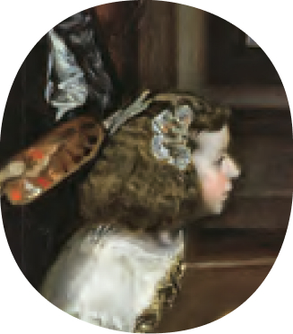

적용 활동
적용 활동
1 (2) 그림 속 상황을 바탕으로, (1)에서 정한 서술자가 들려주는 짧은 이야기를 만들어 보자.

예 오늘은 화가를 불러 국왕 폐하와 왕비 마마의 초상화를 그리도록 되어 있는 날이다. 그런데 우리 어린 공주님이 화가의 옆에 서서 계속 칭얼거리며 본인을 먼저 그려 달라고 고집을 부리고 있다. 사실, 나는 시녀로 위장하고 있지만, 이 왕가에 의해 망하고 만 적국의 공주이다. 내가 만약 이 이야기를 공주에게 들려준다면 어떨까? 어린 공주여, 사실은 난…….
내가 과연 화가로서 성공할 수 있을까 고민하며 그리고 또 그리기를 몇 년이나 해 왔던가. 어느덧 나는 왕과 그의 가족들을 그리는 궁정 화가가 되었다. 오늘은 왕과 왕비의 초상화를 그리는 날인데, 공주와 시종, 시녀들이 구경하러 왔다. 다른 사람들은 쉽게 접할 수 없는 왕실의 풍경을 오롯이 관찰하고 있는 내 모습이 새삼 자랑스럽다. 오늘은 왕실의 초상화를 그리는 이 순간의 내 모습과 왕실의 풍경을 함께 담은 그림을 그려야겠다. 어린 시종이 발로 건드리고 있는 개의 털끝 하나까지도 살아 있는 그림을 완성하고 말겠다.